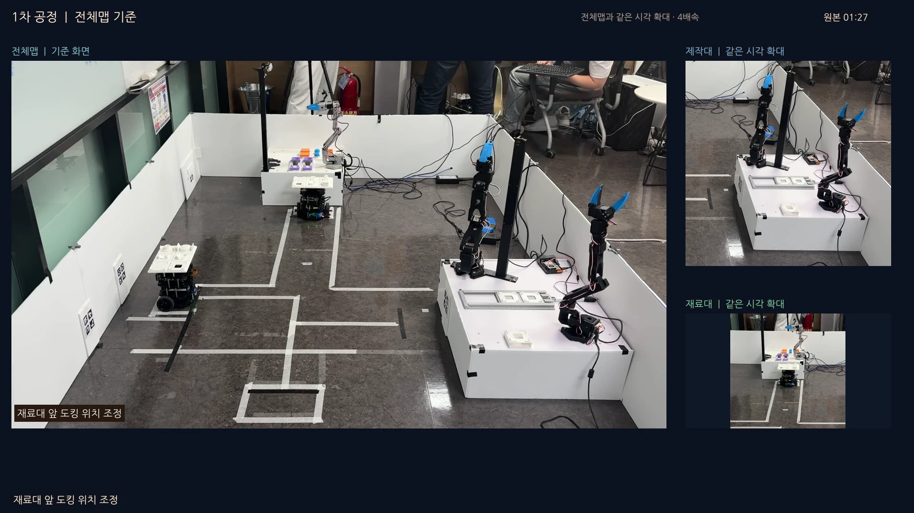

03 / AUTONOMOUS MOBILE ROBOT
개발 진행 중 / 1차 통합 시연 완료
스마트팩토리
이동로봇과 설비 연동
2026.09 – 진행 중
7s_FA / 7인 팀
자재창고와 제작공정 사이를 이동하는 두 대의 AMR.
Nav2 목적지 주행, ArUco 정렬, IR 정지를 연결합니다.
 확대 ↗ROS 2 자동화 공정 전경 / 운반로봇 2대와 로봇팔과 리니어로 구성한 팀 시스템
확대 ↗ROS 2 자동화 공정 전경 / 운반로봇 2대와 로봇팔과 리니어로 구성한 팀 시스템
제가 담당한 일
-
01
지도와 웨이포인트 주행SLAM 지도 작성과 Nav2 주행환경 구성. 목적지 위치와 방향을 설정하고, 실제 로봇에서 주행과 접근 동작을 확인했습니다.
-
02
ArUco + IR 정밀 도킹4개 마커를 하나의 보드로 인식해 정렬하고, 최종 직진 중 IR 감지와 오도메트리 정지를 확인하는 도킹 흐름을 구현했습니다.
-
03
ROS 2 통신과 실행 환경Host와 운반로봇의 통신과 실행환경을 구성하고, 로봇별 namespace와 설정을 분리했습니다.
SYSTEM ARCHITECTURE
Host PC주문 / 공정 순서 관리
목적지 명령 / 완료 결과 확인
ROS 2 Action / Goal / Feedback / Result
M1 / BURGER 1로봇 내부 Nav2 / AMCL
ArUco 정렬 / IR 정지
M2 / BURGER 2로봇 내부 Nav2 / AMCL
ArUco 정렬 / IR 정지
작업 결과주행 + 종단 동작 + 정지 확인 → 완료
각 로봇에서 Nav2 주행과 도킹을 실행하고, Host에서 목적지 명령과 공정 순서를 관리합니다.
PROJECT FILM전체 공정 통합 시연

전체 공정 통합 시연 / 2분 59초 / 4배속영상 따로 열기 ↗
03 / DOCKING & VALIDATION
ENGINEERING NOTE
ArUco / IR 기반
도킹 제어와 완료 판정
4개 마커
정렬최종
직진IR HIGH
감지정지 확인
완료 회신
근접 구간의 마커 유실에 대응
4개 마커의 16개 모서리로 보드 자세를 추정합니다. 정렬을 마치면 최종 직진 단계로 전환해, 가까워져 마커가 시야에서 벗어나도 마커 자세로 재조향하지 않도록 구성했습니다.
도킹 완료 조건IR 감지 + 실제 정지최종 접근 중 IR HIGH를 확인한 뒤, 최신 오도메트리에서 정지 상태가 0.5초 유지되어야 DOCKED로 판정합니다. 입력 끊김이나 조기 정지를 도킹 성공으로 처리하지 않습니다.
구현 현황과 후속 과제
확인버거1과 버거2 개별 주행과 도킹 성공 사례
A제품 2개 주문 기반 전체 공정 시연
로봇팔과 리니어 연동과 두 로봇 복귀
후속 검증반복 도킹의 위치와 각도 오차
하중 / 조명 / 배터리 조건별 안정성
최신 최적화본의 실기기 성능
확장 계획지게차 운반로봇 추가
완제품 파레트 이송과 창고 적재
1차 통합 성과주문 → 부품 상차 → AMR 운반 / 도킹 → 조립 / 적재 → 복귀를 팀 시스템에서 시연했습니다. 지게차 이송은 후속 확장 범위이며, 반복 도킹 정밀도와 조건별 안정성은 추가 측정 대상입니다.